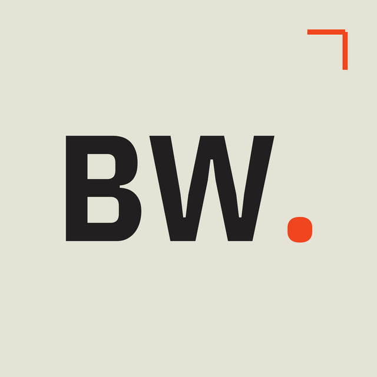

Conditions d'utilisation
Summary (English)
- The BirostWeb Social dashboard (
dashboard.birostweb.fr) is a private internal tool used only by the BirostWeb team to view analytics for BirostWeb's own TikTok, Instagram and LinkedIn accounts. It is not a public service: there is no sign-up, and access requires a team password. - It is read-only: it never posts, edits or deletes anything on TikTok, Instagram or LinkedIn.
- A connected account can be disconnected at any time from the dashboard; this deletes the stored access tokens and the related data from our server.
- Data is handled as described in our Privacy Policy. Use of the platforms remains subject to their own terms (TikTok, Meta, LinkedIn).
- The service is provided "as is", without any availability guarantee. These terms are governed by French law. Contact: contact@theo-birost.fr.
1. Objet et éditeur
Les présentes conditions encadrent l'utilisation du Social dashboard BirostWeb (dashboard.birostweb.fr), édité par BirostWeb — contact : contact@theo-birost.fr.
Il s'agit d'un outil interne et privé qui affiche les statistiques des propres comptes TikTok, Instagram et LinkedIn de BirostWeb (abonnés, publications, vues, interactions, commentaires), afin de suivre leurs performances.
2. Accès au service
- Le service n'est pas ouvert au public : il n'existe ni inscription ni création de compte utilisateur.
- L'accès est réservé à l'équipe BirostWeb et protégé par un mot de passe. Les personnes autorisées s'engagent à le garder confidentiel.
- Seules la présente page et la politique de confidentialité sont consultables sans mot de passe.
3. Connexion des comptes et lecture seule
- Les comptes TikTok, Instagram et LinkedIn sont reliés par la procédure d'autorisation officielle de chaque plateforme (OAuth), avec les seules autorisations de lecture détaillées dans la politique de confidentialité.
- L'application fonctionne en lecture seule : elle ne publie, ne modifie et ne supprime aucun contenu sur les plateformes.
- Un compte peut être déconnecté à tout moment depuis le dashboard (bouton « Déconnecter ») : le jeton d'accès est révoqué auprès de la plateforme lorsque celle-ci le permet, puis le jeton, l'historique des abonnés et le cache de cette plateforme sont supprimés de notre serveur. L'accès peut aussi être retiré depuis les paramètres de la plateforme concernée.
4. Données personnelles
Les données lues, leur stockage, leur durée de conservation et leur suppression sont décrits dans la politique de confidentialité, qui fait partie intégrante des présentes conditions. Aucune donnée n'est vendue, louée ni partagée avec des tiers.
5. Plateformes tierces
- Le service dépend des API de TikTok, Meta (Instagram) et LinkedIn. Leur disponibilité, leurs limites et leurs évolutions peuvent interrompre ou modifier certaines fonctions sans préavis.
- L'utilisation de ces plateformes reste soumise à leurs propres conditions et politiques (notamment les conditions d'utilisation et règles pour développeurs de TikTok, de Meta et de LinkedIn), que BirostWeb s'engage à respecter.
- Le service n'est ni affilié à TikTok, Meta ou LinkedIn, ni approuvé par eux.
6. Disponibilité et responsabilité
- Le service est fourni « en l'état », sans garantie de disponibilité, de continuité ni d'exactitude des statistiques, qui proviennent des plateformes et peuvent être retardées (mise en cache de quelques minutes) ou incomplètes.
- Dans les limites permises par la loi, BirostWeb ne saurait être tenu responsable des dommages indirects résultant de l'utilisation ou de l'indisponibilité du service, ni des interruptions ou modifications imputables aux plateformes tierces.
- BirostWeb peut modifier, suspendre ou arrêter le service à tout moment.
7. Modification des conditions
Ces conditions peuvent être mises à jour ; la date de dernière mise à jour figure en haut de cette page.
8. Droit applicable et contact
Les présentes conditions sont régies par le droit français. Pour toute question : contact@theo-birost.fr.